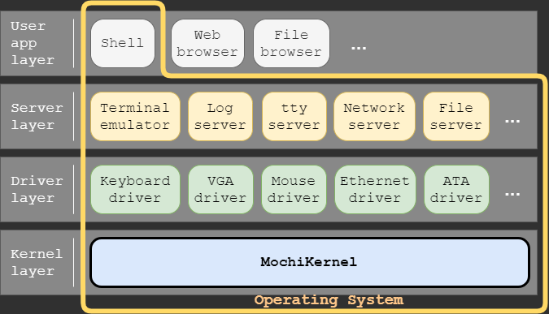

MochiKernelとは？
カーネル
オペレーティングシステムを構成する中核となるプログラムのこと。
MochiKernelは、PC/AT互換機上で動作するフルスクラッチ開発のマイクロカーネルです。マイクロカーネルとは、カーネルの一部の機能（デバイスドライバやファイルシステムなど）をカーネル上のユーザ空間で動作するプロセスに移してカーネルを小さくする事でカーネル設計を簡素化し安全・信頼性を高め、また、移した機能単体の再起動や付け替えを容易にします。
MochiKernelでは、プロセス間通信機能、メモリ管理機能、割込み管理機能、I/O管理機能、タスク管理機能などを持ちます。ユーザ空間はユーザ・サーバ・ドライバの順で3つのレベルで管理され、隣り合ったレベル間でのみプロセス間通信が行えます。また、デバイス入出力はドライバのみに制限されます。

MochiKernelを用いたオペレーティングシステム構成例
MochiKernelを用いたオペレーティングシステム構成例
利用者制限はなく自由にプログラムに組み込むことが可能で、ソースコードは誰にでも公開しています。詳細は下記ライセンス項を参照して下さい。
ライセンス
The MIT LicenseCopyright (C) 2020 Mochi.
Permission is hereby granted, free of charge, to any person obtaining a copy of this software and associated documentation files (the "Software"), to deal in the Software without restriction, including without limitation the rights to use, copy, modify, merge, publish, distribute, sublicense, and/or sell copies of the Software, and to permit persons to whom the Software is furnished to do so, subject to the following conditions:
The above copyright notice and this permission notice shall be included in all copies or substantial portions of the Software.
THE SOFTWARE IS PROVIDED "AS IS", WITHOUT WARRANTY OF ANY KIND, EXPRESS OR IMPLIED, INCLUDING BUT NOT LIMITED TO THE WARRANTIES OF MERCHANTABILITY, FITNESS FOR A PARTICULAR PURPOSE AND NONINFRINGEMENT. IN NO EVENT SHALL THE AUTHORS OR COPYRIGHT HOLDERS BE LIABLE FOR ANY CLAIM, DAMAGES OR OTHER LIABILITY, WHETHER IN AN ACTION OF CONTRACT, TORT OR OTHERWISE, ARISING FROM, OUT OF OR IN CONNECTION WITH THE SOFTWARE OR THE USE OR OTHER DEALINGS IN THE SOFTWARE.
ライセンス(日本語訳)
The MIT LicenseCopyright (C) 2020 Mochi.
以下に定める条件に従い、本ソフトウェアおよび関連文書のファイル（以下「ソフトウェア」）の複製を取得するすべての人に対し、ソフトウェアを無制限に扱うことを無償で許可します。 これには、ソフトウェアの複製を使用、複写、変更、結合、掲載、頒布、サブライセンス、および/または販売する権利、およびソフトウェアを提供する相手に同じことを許可する権利も無制限に含まれます。
上記の著作権表示および本許諾表示を、ソフトウェアのすべての複製または重要な部分に記載するものとします。
ソフトウェアは「現状のまま」で、明示であるか暗黙であるかを問わず、何らの保証もなく提供されます。 ここでいう保証とは、商品性、特定の目的への適合性、および権利非侵害についての保証も含みますが、それに限定されるものではありません。 作者または著作権者は、契約行為、不法行為、またはそれ以外であろうと、ソフトウェアに起因または関連し、あるいはソフトウェアの使用またはその他の扱いによって生じる一切の請求、損害、その他の義務について何らの責任も負わないものとします。